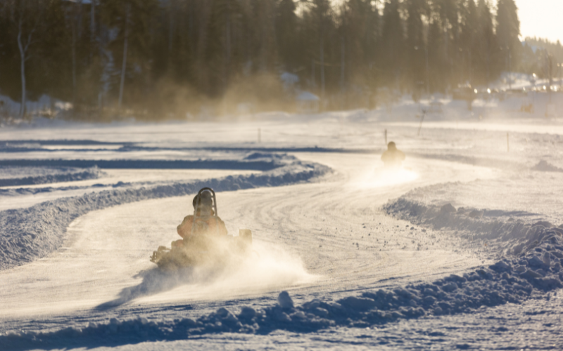

L'hiver en Alsace, c'est le moment où votre équipe arrive au bureau avant qu'il ne fasse jour, en repart à la nuit tombée, et commence sérieusement à se demander si le soleil existe encore. Les objectifs annuels approchent, la fatigue s'installe, et l'ambiance oscille entre "on va y arriver" et un long silence devant la machine à café.
C'est exactement à ce moment-là qu'une journée de cohésion a le plus d'impact. Reste à trouver un format qui convient à tout le monde. Et c'est là qu'on découvre que l'Alsace, sous ses airs de carte postale enneigée, cache une quantité impressionnante d'activités de team building adaptées à la saison.
Pourquoi l'hiver est un bon moment pour un team building
On pense spontanément au printemps ou à la rentrée pour organiser un séminaire d'entreprise, mais l'hiver possède 5 arguments qui méritent le détour :
L'hiver c'est LE creux de motivation de l'année. Entre le rush de fin d'exercice, les vacances, la reprise de janvier et le blue monday, les équipes tournent parfois au ralenti. Une action de cohésion à ce moment précis se remarque bien plus qu'au mois de mai, quand tout le monde est déjà d'humeur légère.
C'est la période où l'on prépare l'année d'après. Aligner une équipe sur de nouveaux objectifs fonctionne mieux après une expérience partagée qu'après deux heures de réunion en salle. Et surtout, ça se retient plus longtemps.
Les prestataires sont disponibles. Au mois de juin, les créneaux des meilleures activités se disputent. En novembre, janvier ou février, vous choisissez votre date, votre lieu, et souvent votre tarif. C'est la basse saison de l'événementiel professionnel, et ça se négocie.
Il fait moche et froid. Ce qui, aussi bête que ça paraisse, joue en votre faveur : personne ne regrette de rater une belle journée dehors. Tout le monde est ok pour passer une journée à discuter KPI (surtout autour d'un bon vin chaud).
La période des fêtes vous permet de montrer à vos équipes que vous tenez à eux. L'hiver, c'est également cette période un peu magique en Alsace où tout prend des allures de conte de fées. Une ivresse générale s'empare de tous et choisir le mois de décembre pour organiser un événement d'entreprise c'est un peu comme déclarer votre flamme à vos collègues.
Décembre est le mois le plus tendu de l'année pour l'événementiel d'entreprise en Alsace. Entre les clôtures d'exercice, les fêtes de fin d'année et l'afflux touristique des marchés de Noël, les prestataires et les lieux de séminaire affichent complet plusieurs mois à l'avance. Janvier et février, à l'inverse, sont les deux mois les plus calmes et les plus négociables du calendrier.
Les meilleures activités de team building à faire en hiver en Alsace
Profiter du grand air : journée neige et déjeuner trappeur
C'est notre coup de cœur de l'hiver, tout simplement. Vos collègues, des igloos, du fromage, une cabane de trappeur, des raquettes et du biathlon. Que demander de plus, sérieusement ?
🛷 Journée neige et déjeuner trappeur dans les Vosges
Café d'accueil gourmand, construction d'igloo, balade en traîneau à chiens, randonnée en raquettes et goûter vin chaud crêpes. Déjeuner montagnard dans une cabane de trappeur entièrement privatisée. Challenge biathlon en option, encadré par des athlètes de haut niveau. Journée complète, tous niveaux et toutes conditions physiques. Possibilité de dormir sur place, d'ajouter un dîner ou une salle de réunion. Sous réserve d'enneigement.
Nature & Plein air · Cohésion · Journée complèteL'escape game d'entreprise
Le grand classique, et il y a une raison à ça. En soixante minutes, un escape game révèle plus de choses sur le fonctionnement réel d'une équipe que six mois de réunions hebdomadaires : qui prend les décisions, qui écoute, qui garde son calme, et qui crie "J'AI TROUVÉ" avant d'avoir trouvé quoi que ce soit.
L'Alsace est bien pourvue, avec des salles à Strasbourg, Mulhouse et Colmar dont certaines conçues pour les groupes d'entreprise, avec plusieurs équipes en parallèle et un débrief encadré à la fin. Ce débrief est déterminant : sans lui, vous avez passé un bon moment mais il n'en reste rien la semaine suivante.
🔒 Escape game en équipe
Immersion et collaboration sous contrainte de temps. Format 1h à 2h, groupes de 4 à 6 par salle, jusqu'à 30 personnes en simultané sur les plus grands sites. Dès 25€/pers.
Aventure & Défi · Cohésion · Résolution de problèmesLa réalité virtuelle en arène
C'est le format qui surprend le plus les sceptiques. Les participants évoluent librement dans une arène physique, casque sur la tête, en équipes qui doivent coordonner leurs déplacements sans se voir autrement qu'en avatar. On y découvre très vite que la communication verbale précise n'est pas la qualité la mieux partagée du monde du travail.
L'avantage en hiver est évident : intégralement en intérieur, chauffé, et la météo n'a aucune influence sur le déroulé. L'autre avantage l'est moins : personne n'est bon en réalité virtuelle la première fois, ce qui neutralise les hiérarchies plus efficacement qu'un discours sur l'horizontalité.
🎮 Arène de réalité virtuelle, EVA
Déplacement libre en arène, équipes en immersion totale, plusieurs modes de jeu coopératifs. Format 1h30 à 2h. Intégralement indoor et chauffé. Tarif et jauge : nous consulter.
Aventure & Défi · Communication · Cohésion
Les ateliers artisanaux, la carte alsacienne
C'est ici que notre belle région dévoile tous ses atouts. L'Alsace et l'artisanat sont presque synonymes. L'hiver est une période idéale pour vous plonger dans des savoir-faire aussi pertinents qu'originaux.
🏺 Atelier poterie & céramique alsacienne
Initiation encadrée au tournage et au décor, dans la tradition céramique alsacienne. Format calme et très inclusif, où chacun repart avec la pièce qu'il a façonnée. Environ 3h, accessible de 6 à 30 personnes, dès 55€/pers.
Artisanat & Savoir-faire · Créatif · CohésionLes formats plus originaux à tester cet hiver
Pour les entreprises qui cherchent à nouer des liens à la fraîche :
- Le lancer de hache en intérieur, aussi régressif et intense qu'il en a l'air, encadré très strictement, et étonnamment technique. Prévoyez que la personne la plus discrète de la boîte vous mette une correction.
- Le karting, pour une pointe de vitesse et de compétition amicale entre collègues, disponible en extérieur en Alsace toute l'année.
- Les expériences immersives digitales, cartographie projetée, jeux collaboratifs sur grand écran, formats hybrides. Un secteur qui bouge vite et propose du nouveau chaque année.
L'idée de journée complète : Matinée escape game ou arène de réalité virtuelle. Déjeuner dans une winstub. Après-midi atelier artisanal selon l'équipe. Fin de journée autour d'un verre, le moment où les gens se parlent vraiment. Budget indicatif : 110 à 170€ par personne tout compris pour une équipe de 15 à 30 personnes.
Comment réussir son team building hivernal
Quelques règles apprises à la dure.
- Vérifiez la température, sérieusement. Un hangar "couvert" n'est pas un lieu chauffé, et une activité en extérieur suppose un équipement adapté. Posez la question au prestataire avec une température en degrés, et faites passer la consigne vestimentaire. Vos collaborateurs s'en souviendront, dans un sens ou dans l'autre.
- Raccourcissez. En hiver, l'énergie collective baisse plus vite. Une demi-journée dense vaut mieux qu'une journée complète dont les deux dernières heures se passent à regarder l'heure.
- Alternez les intensités. Une activité physique, puis une activité calme, puis un temps convivial. C'est le rythme qui permet à tout le monde de suivre.
- Anticipez l'inclusion. Mobilité réduite, grossesse, vertige, claustrophobie, alcool. Une question posée discrètement trois semaines avant évite une mise à l'écart le jour J. C'est là que la plupart des team buildings ratés… se ratent.
- Gardez du temps informel. Le moment où les langues se délient n'est presque jamais pendant l'activité, mais juste après, autour d'un verre. Ne le sacrifiez pas pour caser une épreuve de plus.
- Réservez tôt pour décembre. Janvier et février sont calmes, mais décembre est saturé partout en Alsace. Comptez trois mois d'avance.
Questions fréquentes
Quel budget prévoir pour un team building en hiver en Alsace ?
Comptez 40 à 90€ par personne pour une demi-journée d'activité seule, et 90 à 180€ par personne pour une formule incluant le repas. Les tarifs sont plus négociables de janvier à mars qu'en haute saison.
Combien de temps à l'avance faut-il réserver ?
Six à huit semaines suffisent en janvier et février. Comptez trois mois pour décembre, qui est le mois le plus demandé de l'année.
Quelle durée idéale ?
Une demi-journée pour une action de cohésion ponctuelle. Une journée complète si vous couplez avec un temps de travail, une réunion d'objectifs ou un séminaire.
Que faire si l'équipe est très hétérogène ?
Privilégiez les formats modulaires à ateliers multiples, ou les activités créatives et artisanales, qui ne créent pas de hiérarchie physique entre les participants.
En résumé
L'hiver n'est pas la saison à éviter pour un team building, c'est celle où il produit le plus d'effet. Les équipes en ont davantage besoin, les prestataires sont disponibles, les tarifs sont plus doux, et l'Alsace propose assez de formats pour qu'aucun profil ne reste sur le bord de la route.
Il ne reste qu'à choisir entre construire un igloo, façonner un bol ou courir dans une arène virtuelle. Ce qui, admettons-le, est un problème assez agréable à avoir.
Toutes les activités de team building en Alsace
Filtrez par ville, univers et taille de groupe. Pas d'idée précise ? Dites-nous ce que vous cherchez, on s'occupe du reste.